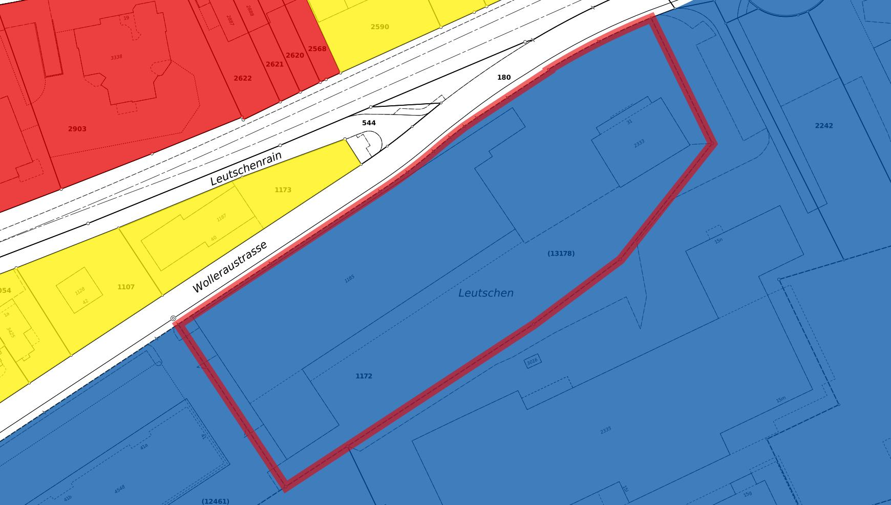
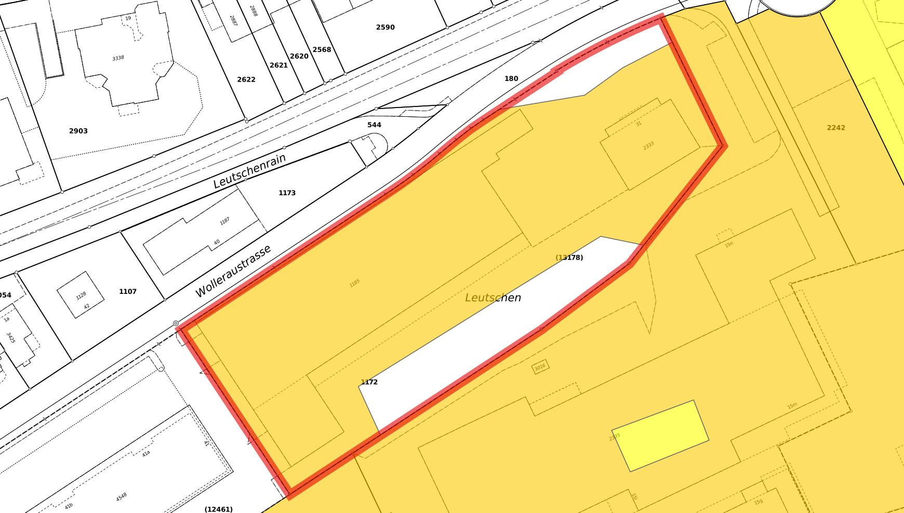
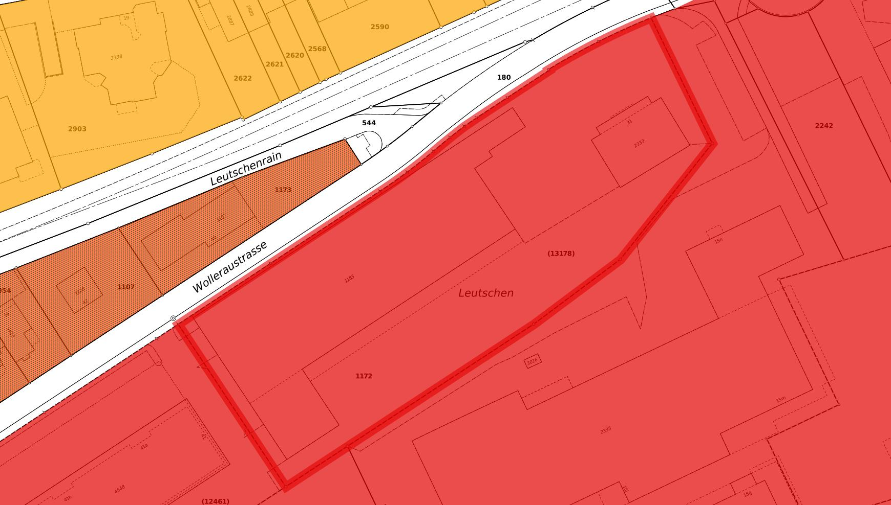

Projekt «Aurum Leutschen» · Businessplan & Bauprojekt-Dossier
Goldraffinerie, Hochsicherheits-Goldlager & Security House
Parzelle Nr. 1172 · Gebiet Leutschen / Wolleraustrasse · 8807 Freienbach (SZ)
Grundstück
Nr. 1172, Freienbach (BFS 1322) · E-GRID CH932677383838 · 6'014 m²
Zone
Industriezone 1 (100 %) · Lärmempfindlichkeitsstufe IV
Kaufpreis Grundstück
CHF 12'000'000 (CHF 1'995/m²)
Gesamtinvestition
ca. CHF 64 Mio. (inkl. Grundstück, Bau, Anlagen, Sicherheitstechnik)
Dokument
Businessplan / Projektstudie – Version 1.0
Datum
20. Juli 2026
VERTRAULICH – Dieses Dokument ist eine indikative Projekt- und Machbarkeitsstudie. Alle Flächen-, Kosten- und
Ertragsangaben sind Planungsannahmen und durch Fachplaner, Behörden und Gutachter zu verifizieren.
Architektonische Referenz: FORMS Gallery, Freienbach (formsgallery.com) – umgenutzte Industriehalle mit Premium-Ausbaustandard.
ÜbersichtInhalt
1Executive Summary
2Projektidee & Vision
3Standort & Grundstück (ÖREB-Analyse)
4Architektur- & Bebauungskonzept
5Betriebskonzept Goldraffinerie
6Gold-Bunker – Hochsicherheits-Wertlager
7Security House & Sicherheitskonzept
8Regulatorik, Bewilligungen & Compliance
9Markt & Wettbewerb
10Geschäftsmodell & Erlösquellen
11Investitionsrechnung (CAPEX)
12Finanzplan 5 Jahre & Finanzierung
13Realisierungs-Zeitplan
14Risikoanalyse & Mitigation
15Anhang: ÖREB-Katasterauszug (Zusammenfassung)
Kapitel 1Executive Summary
Das Projekt «Aurum Leutschen» umfasst Erwerb und Bebauung der Industrieparzelle Nr. 1172 (6'014 m²) an der
Wolleraustrasse im Gebiet Leutschen, Freienbach SZ, mit einem integrierten Edelmetall-Kompetenzzentrum bestehend aus
drei Bausteinen: einer Goldraffinerie (Ausbaukapazität bis 100 t Feingold p. a.), einem unterirdischen
Hochsicherheits-Goldlager («Gold-Bunker») mit einer Einlagerungskapazität von bis zu 250 t sowie einem
permanent besetzten Security House als Sicherheits- und Logistikzentrale.
6'014 m²
Grundstück, Industriezone 1
CHF 12 Mio.
Kaufpreis Grundstück
CHF 64 Mio.
Gesamtinvestition (indikativ)
100 t/a
Raffinationskapazität (Endausbau)
250 t
Tresorkapazität Gold-Bunker
~55
Arbeitsplätze im Endausbau
Der Standort ist aussergewöhnlich gut geeignet: Die Parzelle liegt zu 100 % in der Industriezone 1 mit
Lärmempfindlichkeitsstufe IV (stark störende Betriebe zulässig), verfügt über direkte Anbindung an die
A3 (Anschluss Pfäffikon SZ), liegt im steuergünstigen Kanton Schwyz und in unmittelbarer Nähe zum Finanzplatz
Pfäffikon/Wollerau (Family Offices, Fonds- und Rohstoffhäuser) sowie 30 Fahrminuten von Zürich. Die architektonische
Leitidee orientiert sich an der benachbarten FORMS Gallery: eine präzise, monolithische Industriehalle mit
Premium-Ausstrahlung – aussen zurückhaltend, innen auf höchstem technischem Niveau.
Das Geschäftsmodell kombiniert drei sich verstärkende Ertragssäulen: (1) Lohnraffination und Recycling («Urban Mining»)
für Handel, Industrie, Scheideanstalten und Banken, (2) margenstarke Verwahrungsdienstleistungen
(segregierte Hochsicherheitslagerung ausserhalb des Bankensystems) und (3) Handel/Produkte (Barren 1 g bis 12.5 kg,
Granulat). Im fünften Betriebsjahr wird – bei konservativen Annahmen – ein Umsatz von rund CHF 43 Mio. bei einer
EBITDA-Marge von knapp 40 % erwartet; der Break-even auf Stufe EBITDA wird bereits im ersten vollen Betriebsjahr erreicht.
Investment Case in einem Satz: Ein bewilligungsfähiges Industriegrundstück in einer der besten
Edelmetall- und Vermögens-Regionen der Welt, bebaut mit einer LBMA-fähigen Boutique-Raffinerie plus
Hochsicherheitslager – ein Sachwert-Geschäft mit wiederkehrenden Erträgen und massiver Eintrittsbarriere für Nachahmer.
Kapitel 2Projektidee & Vision
2.1 Ausgangslage
Die Schweiz ist das globale Zentrum der Goldraffination: Ein erheblicher Teil der weltweiten Goldproduktion wird hier
raffiniert, vier der grössten Raffinerien der Welt (Valcambi, PAMP, Argor-Heraeus, Metalor) sind in der Schweiz
domiziliert. Gleichzeitig wächst die Nachfrage nach physischer, segregierter Goldverwahrung ausserhalb des
Bankensystems – getrieben von Family Offices, vermögenden Privatkunden, Edelmetallhändlern und Fonds.
Zwischen den industriellen Grossraffinerien (Tessin, Neuenburg) und kleinen Scheideanstalten besteht eine Lücke:
ein Premium-Anbieter im Grossraum Zürich, der Raffination, Prüfung, Formgebung und Hochsicherheitslagerung
an einem Standort vereint.
2.2 Die drei Bausteine
Baustein
Funktion
Zielkunden
Goldraffinerie
Schmelzen, Probenahme, Analyse (ICP/Feuerprobe), Raffination auf 999.9, Giessen von Barren & Granulat, Punzierung
Family Offices, HNWI, Händler, Fonds/ETP-Anbieter, Treuhänder
Security House
24/7-Sicherheitszentrale, Zutritts- und Fahrzeugschleusen, Werttransport-Dock, Leitstand, Personalschleuse
Interne Funktion (Schutz von Betrieb, Personal, Kundenwerten)
2.3 Vision
«Aurum Leutschen» positioniert sich als «The Vault of Zurich's Gold Coast» – die diskrete Schweizer
Adresse, an der Gold nicht nur raffiniert, sondern über den gesamten Lebenszyklus betreut wird: Ankauf, Analyse,
Raffination, Formgebung, Zertifizierung, Lagerung, Versicherung, Auslieferung. Mittelfristiges Ziel ist die
Akkreditierung als anerkannter Schmelzer/Prüfer und – im Endausbau – die Aufnahme in die
LBMA Good Delivery List.
Kapitel 3Standort & Grundstück (ÖREB-Analyse)
3.1 Grundstücksdaten (gemäss ÖREB-Katasterauszug vom 20.07.2026)
Merkmal
Wert
Grundstück-Nr. / Art
1172 / Liegenschaft
E-GRID
CH932677383838
Gemeinde
Freienbach SZ (BFS-Nr. 1322), Gebiet Leutschen / Wolleraustrasse
Abb. 1 – Situationsplan (amtliche Vermessung): Parzelle 1172 (rot umrandet) zwischen Wolleraustrasse und Gebiet Leutschen; Bestandesbauten auf der Parzelle werden zurückgebaut. Quelle: ÖREB-Katasterauszug Kanton Schwyz.
3.2 Standortbewertung aus Sicht Raffinerie & Wertlager
Planungsrecht ideal: Industriezone 1 mit ES IV ist die bestmögliche Zonierung für Schmelzbetrieb (Öfen, Abluftanlagen, 24/7-Logistik) – keine Konflikte mit Wohnnutzung auf der Parzelle selbst.
Verkehr & Werttransport: Direkte, übersichtliche Zufahrt ab Wolleraustrasse; A3-Anschluss in wenigen Minuten; Flughafen Zürich ca. 40 Min. – kurze, planbare Werttransportrouten mit Ausweichvarianten.
Finanz-Ökosystem: Pfäffikon SZ / Wollerau / Zug gehören zur höchsten Dichte an Family Offices und Asset Managern der Schweiz – der Verwahrungskunde sitzt in Sichtweite.
Steuern & Recht: Kanton Schwyz mit tiefer Gewinn- und Kapitalsteuer; politisch stabiles, eigentumsfreundliches Umfeld; keine Handänderungssteuer im Kanton Schwyz.
Arbeitsmarkt: Fachkräfte (Chemie, Metallurgie, Sicherheit, Logistik) im Grossraum Zürich/Zug rekrutierbar; SBB-Anschluss Pfäffikon SZ in Fahrradnähe.
KbS-Eintrag beherrschbar: «Belastet, nicht sanierungsbedürftig» bedeutet: kein Sanierungszwang; bei Aushub fallen erhöhte Entsorgungskosten an (im CAPEX mit eingerechnet); Aushubkonzept und Entsorgungsnachweis werden mit dem Amt für Umwelt und Energie SZ abgestimmt.
Hinweis: Vor Beurkundung sind Grundbuchauszug (Dienstbarkeiten, Anmerkungen), Altlasten-Voruntersuchung (historische
Untersuchung gem. AltlV), Baugrundgutachten und die Abklärung von Gestaltungsplan-/Erschliessungspflichten
Bestandteil der Due Diligence.
Kapitel 4Architektur- & Bebauungskonzept
4.1 Architektonische Leitidee – Referenz FORMS Gallery
Gestalterische Referenz ist die FORMS Gallery in Freienbach (formsgallery.com): eine ehemalige
Industriehalle, die mit reduzierter Materialpalette, klarer Kubatur und hochwertigem Innenausbau in eine
Premium-Design-Destination verwandelt wurde. Diese Haltung wird auf den Neubau übertragen:
Ein ruhiger, monolithischer Baukörper (Halle mit integriertem zweigeschossigem Kopfbau), präzise Fugenteilung, kein «Bunker-Look» nach aussen – Sicherheit bleibt unsichtbar.
Materialpalette: Sichtbeton-Sockel (durchschusshemmend dimensioniert), dunkle, matt eloxierte Metallfassade mit vertikaler Profilierung, messing-/goldfarbene Akzente am Kundeneingang als subtile Referenz an den Inhalt.
Kopfbau als «Galerie»: Empfang, Kunden-Lounge, Audit-/Besprechungsräume und Showroom für Barrenprodukte mit Showroom-Qualität analog FORMS – Beratung und Vertrauen als Raumerlebnis.
Industrie 4.0 innen: stützenfreie Raffineriehalle (Raster 8 m), Kranbahn 5 t, Medienkanäle im Boden, Tageslicht über verglaste Sheds nach Norden.
Nachhaltigkeit: PV-Vollbelegung Dach (~400 kWp), Abwärmenutzung der Öfen für Heizung/BWW, Retention/Versickerung der Dachwässer, Minergie-Standard für den Kopfbau.
4.2 Bebauungskonzept (schematisch)
Abb. 2 – Bebauungskonzept (schematisch, nicht massstäblich): Halle mit Kopfbau strassenseitig, Gold-Bunker vollständig unter Terrain, Security House an der einzigen Zufahrt, umlaufender Sicherheitsperimeter.
Fussabdruck oberirdisch ≈ 2'350 m² → Überbauungsgrad ~39 %
Aussenanlagen: Fahrzeugschleuse/Dock, ca. 30 Parkplätze, Umfahrung für WT-Fahrzeuge, Retentionsflächen, Perimeterzaun. Ausnützungs- und Abstandsnachweise gemäss Baureglement Freienbach erfolgen im Vorprojekt.
Analyse: Feuerprobe (Kupellation) als Referenzverfahren, ergänzt durch Röntgenfluoreszenz und ICP-OES; akkreditiertes Prüflabor (Ziel: ISO/IEC 17025).
Raffination: Kombination aus nasschemischer Raffination (Königswasser/Aqua Regia für hochhaltiges Material) und Wohlwill-Elektrolyse für 999.9-Qualität; Silber-Elektrolyse (Moebius) als Nebenlinie; Rückgewinnung von PGM-Anteilen.
Formgebung: Giessen von Guss- und Prägebarren (1 g – 1 kg, 12.5-kg-Standardbarren), Granulat für die Industrie; Punzierung, Seriennummern, Zertifikate, Verpackung/Versiegelung.
Übergabe: direkt in den Gold-Bunker (Kapitel 6) oder via Werttransport-Dock an Kunden/Logistiker.
Abwasser: geschlossene Kreisläufe, Neutralisations- und Fällungsanlage, Schwermetall-Grenzwerte gem. GSchV; Indirekteinleiter-Bewilligung.
Chemikalien: Säurelager (Gefahrgutraum, Auffangwannen, Gaswarnanlage) nach ChemV/SUVA-Richtlinien; Störfallvorsorge (StFV) wird mit dem AfU SZ geprüft.
Lärm: ES IV am Standort; massgebende Anlagen (Rückkühler, Abluft) werden dennoch nach Stand der Technik schallgedämmt (Nachbar-Wohnzonen W2/W4 jenseits der Strasse).
Energie: Anschlussleistung ~1.2 MW (Öfen/Elektrolyse), PV-Eigenstrom, Abwärmenutzung; Notstromanlage (NEA) und USV für Sicherheit & Prozesse.
Arbeitssicherheit: SUVA-Branchenlösung, Ex-Schutz-Zonenkonzept, PSA-Regime, betriebsärztliche Überwachung (Blei/Quecksilber-Monitoring bei Recyclingmaterial).
Kapitel 6Gold-Bunker – Hochsicherheits-Wertlager
6.1 Konzept
Der Gold-Bunker ist ein vollständig unterirdisches Wertlager (~700 m² NF) mit eigenem Zugangskern, baulich und
organisatorisch von der Raffinerie getrennt, aber intern über eine gesicherte Wertschleuse verbunden. Er dient (a) als
Prozesslager der Raffinerie und (b) als kommerzielles Verwahrlager für Dritte – segregiert (physisch getrennte
Positionen je Kunde) oder allokiert (nummerierte Barrenliste).
6.2 Bauliche und technische Auslegung (Planungsstandard)
Element
Auslegung
Tresorraum-Hülle
Monolithischer Spezialbeton mit Bewehrungs-/Einlagensystem, zertifiziert nach EN 1143-1 in einem der höchsten Widerstandsgrade (Zielklasse im Bereich WG X–XIII, Festlegung mit Versicherer/VdS)
Tresortüren & Tagestüren
EN 1143-1 entsprechend Raumklasse, Mehrfach-Verriegelung, Zeitschloss, Vier-Augen-Öffnungsregime
Einbruchmeldetechnik
EN 50131 Grad 4, redundante Übertragungswege (IP/Mobilfunk), Körperschall-, Seismik- und Raumüberwachung, Sabotageschutz
Warenlift 3.5 t ab Wertschleuse, Audit-/Sichtungsraum für Kunden und Revisoren (getrennt vom Lagerbereich)
6.3 Dienstleistungen & Konditionen (Zielgrössen)
Segregierte Verwahrung inkl. All-Risk-Versicherung (Lloyd's-Deckung): 0.20 – 0.50 % p. a. des Warenwerts (volumenabhängig).
Allokierte Sammelverwahrung für Händler/Fonds: ab 0.12 % p. a.
Schliessfach-Suiten für Privatkunden/Family Offices: CHF 1'200 – 15'000 p. a.
Zusatzleistungen: Ein-/Auslagerung, Barrenprüfung mit Prüfbericht, Inventur-/Audit-Begleitung (Big-4-tauglich), Versand-/WT-Organisation, digitale Bestandesplattform mit Bar-Code/Seriennummern-Tracking.
Option offenes Zolllager (OZL): Beantragung beim BAZG zur zoll- und mehrwertsteuerneutralen Lagerung für internationale Kunden.
Differenzierung: Anders als Bankschliessfächer ist das Lager bankenunabhängig, versichert bis auf Einzelpositionsebene, physisch auditierbar und mit der hauseigenen Raffinerie gekoppelt – eingelagertes Altgold kann ohne Transportrisiko direkt vor Ort raffiniert und als zertifizierter Barren wieder eingelagert werden.
Sicherheitszaun mit Übersteig-/Untergrabeschutz, Zaundetektion, Bewegungsanalyse, keine Sichtdeckung
Zone 2
Hof / Fahrzeugschleuse
Doppeltor-Vereinzelung, Unterbodenscanner-Option, Werttransport-Dock als geschlossene Schleuse (Fahrzeug fährt vollständig ein, Tor schliesst, erst dann Übergabe)
Zone 3
Gebäudehülle
Durchbruchhemmende Fassade im Sockel, Fenster RC4+/BR-Verglasung im Kopfbau, Zutritt nur über Personenschleusen
Zone 4
Produktion/Werträume
Interlock-Schleusen, Vier-Augen-Prinzip, Aufenthalts- und Bewegungsprotokollierung, Wertbehältnisse für Tagesbestände
Zone 5
Gold-Bunker
Höchste Schutzstufe gem. Kapitel 6, Zeitschloss-Regime, Dual Custody ohne Ausnahme
7.2 Security House (Funktionen)
24/7-Leitstand: ständig doppelt besetzte Sicherheitszentrale (eigenes Personal, ergänzt durch zertifizierten Sicherheitsdienstleister), Aufschaltung auf anerkannte Alarmempfangsstelle und direkte Meldewege zur Kantonspolizei Schwyz.
Sicherheitsüberprüfung aller Mitarbeitenden (Strafregister-/Betreibungsauszug, Referenzen), rollenbasierte Berechtigungen, Job-Rotation in sensiblen Funktionen.
Vier-Augen-Prinzip für alle Wertbewegungen; systemseitig erzwungen (kein Einzelzugriff möglich).
Cyber-Security: getrennte Netze (OT/IT/Sicherheitstechnik), 24/7-Monitoring, ISO 27001 als Zielstandard.
Versicherungskonzept: All-Risk-Police für Bestände (Lloyd's-Markt), Betriebshaftpflicht, Transportversicherung; Sicherheitskonzept wird mit Versicherer und VdS-/SES-Sachverständigen abgenommen.
Dieses Kapitel beschreibt das Konzept auf Planungsebene (Normen, Zonen, Organisation). Detailauslegungen erfolgen vertraulich mit zertifizierten Sicherheitsplanern, dem Versicherer und den Behörden und sind nicht Bestandteil dieses Dokuments.
Kapitel 8Regulatorik, Bewilligungen & Compliance
Bereich
Anforderung / Behörde
Schmelzbewilligung
Edelmetallkontrollgesetz (EMKG/EMKV); Bewilligung des Zentralamts für Edelmetallkontrolle (BAZG) für gewerbsmässiges Schmelzen von Bankedelmetallen
Handelsprüfer-Bewilligung
Für Bestimmung des Feingehalts und Punzierung von Schmelzprodukten; beeidigte Prüfer, Registrierung der Schmelzstempel
Geldwäscherei (GwG)
Unterstellung als Finanzintermediär für Handel/Verwahrung von Bankedelmetallen: Anschluss an SRO bzw. FINMA-Aufsicht; KYC/AML-Prozesse, Herkunftsnachweise, Transaktionsmonitoring
Responsible Sourcing
LBMA Responsible Gold Guidance, OECD Due Diligence Guidance; jährliche unabhängige Assurance (Voraussetzung für Good-Delivery-Ziel)
Baubewilligung
Gemeinde Freienbach (Baureglement, Zonenkonformität Industriezone 1); kantonale Fachstellen (AfU, Tiefbauamt)
Umwelt
LRV (Abluft), GSchV (Abwasser), USG/AltlV (Aushub auf KbS-Standort 29_B130 mit Entsorgungsnachweis), StFV-Prüfung (Chemikalienmengen), VOC-Abgabe
Brandschutz/Arbeitssicherheit
VKF-Brandschutzkonzept mit QS-Verantwortlichem, SUVA/EKAS-Richtlinien, ArG-Plangenehmigung (SECO/kant. Arbeitsinspektorat) für den Industriebetrieb
Kantonale Bewilligungen für bewaffneten Sicherheitsdienst (sofern eingesetzt), Konkordat/kant. Recht SZ
Der Bewilligungspfad wird durch eine spezialisierte Anwaltskanzlei (Edelmetall-/Finanzmarktrecht) begleitet. Zeitkritisch sind Schmelzbewilligung, GwG-Unterstellung und ArG-Plangenehmigung – sie laufen parallel zur Bauphase (vgl. Kapitel 13).
Kapitel 9Markt & Wettbewerb
9.1 Markt
Raffination: Die Schweiz raffiniert einen erheblichen Teil des weltweit gehandelten Goldes; Importe von Rohgold/Doré und Altgold in die Schweiz bewegen sich seit Jahren in der Grössenordnung von über 2'000 t pro Jahr. Recycling («Urban Mining») wächst strukturell: Altgold aus Schmuck, Uhrenindustrie-Ausschuss, Elektronik-Konzentrate.
Verwahrung: Anhaltend hohe Goldpreise, geopolitische Unsicherheit und Diversifikation weg von Bankbilanzen treiben die Nachfrage nach versicherter, segregierter Lagerung in der Schweiz. Zürichsee-Region: höchste Dichte an Family Offices/Asset Managern ausserhalb Zürichs (Pfäffikon SZ, Wollerau, Zug).
Abschreibungen: Gebäude 33 J., Anlagen 10 J., Sicherheitstechnik 12 J. (~CHF 3.5 Mio. p. a.)
12.2 Erfolgsrechnung (indikativ, CHF Mio.)
Position
Jahr 1
Jahr 2
Jahr 3
Jahr 4
Jahr 5
Raffiniertes Feingold (t)
25
40
55
70
80
Ø eingelagerter Bestand (t)
15
25
40
55
70
Umsatz Raffination
7.5
12.0
16.5
21.0
24.0
Umsatz Verwahrung/Tresor
3.4
5.6
9.0
12.4
15.8
Umsatz Handel/Produkte
1.5
2.0
2.5
3.0
3.5
Total Umsatz
12.4
19.6
28.0
36.4
43.3
Personal
-4.3
-5.4
-6.2
-6.9
-7.4
Energie, Chemie, Betriebsmittel
-2.6
-3.6
-4.6
-5.6
-6.2
Versicherung (Bestände/Betrieb)
-1.9
-2.6
-3.6
-4.6
-5.6
Sicherheit, Unterhalt, Verwaltung, Marketing
-3.0
-4.1
-5.2
-6.6
-7.2
EBITDA
0.6
3.9
8.4
12.7
16.9
EBITDA-Marge
5 %
20 %
30 %
35 %
39 %
Abschreibungen
-3.5
-3.5
-3.5
-3.5
-3.5
Finanzaufwand
-1.5
-1.5
-1.4
-1.3
-1.2
Ergebnis vor Steuern
-4.4
-1.1
3.5
7.9
12.2
12.3 Kernaussagen & Sensitivität
EBITDA-positiv ab dem 1. Betriebsjahr; Nettogewinn ab Jahr 3; kumulierter Free Cashflow deckt die Anlaufverluste bis Ende Jahr 4.
Payback der Gesamtinvestition (ohne Landwert-Appreciation): ~9–10 Jahre; inkl. Land als Residualwert deutlich kürzer.
Sensitivität Goldpreis −20 %: Verwahrungsumsatz Jahr 5 sinkt auf ~CHF 12.6 Mio., EBITDA ~CHF 13.7 Mio. – Business Case bleibt tragfähig, da Raffinationsvolumen preisunelastisch ist.
Sensitivität Volumen −25 %: EBITDA Jahr 5 ~CHF 11 Mio.; Break-even-Auslastung der Raffinerie liegt bei ~22 t/a.
Kommerzieller Start Raffination & Verwahrung; LBMA-Track-Record ab Jahr 3 des Betriebs
Kritischer Pfad: Baubewilligung und Schmelzbewilligung. Beide Verfahren werden mit Vorbescheiden/Vorabklärungen (Gemeinde Freienbach, Zentralamt für Edelmetallkontrolle) de-riskiert, bevor der Grundstückskauf beurkundet wird – idealerweise via bedingtem Kaufvertrag oder Kaufrecht.
Quelle: Auszug aus dem Kataster der öffentlich-rechtlichen Eigentumsbeschränkungen (ÖREB), Kanton Schwyz,
Auszugsnummer 11b1d3f5-42d9-4237-bfe4-6ca4ef258411 vom 20.07.2026; katasterverantwortliche Stelle: Amt für
Geoinformation, Schwyz. Stand amtliche Vermessung: 06.07.2026.

Abb. 3 – Nutzungsplanung: Parzelle 1172 zu 100 % in der Industriezone 1 (angrenzend Wohnzonen W2/W4 jenseits der Strasse).

Abb. 4 – Kataster der belasteten Standorte: Eintrag 29_B130, 4'950 m² «belastet, weder überwachungs- noch sanierungsbedürftig».

Abb. 5 – Lärmempfindlichkeitsstufen: ES IV auf der gesamten Parzelle (6'014 m², 100 %).
Rechtsgrundlagen (Auswahl)
Bundesgesetz über die Raumplanung (RPG, SR 700); Planungs- und Baugesetz Kanton Schwyz (PBG, SRSZ 400.100); Baureglement Freienbach (1994, Änderungen 2005/2019/2022)
Umweltschutzgesetz (USG, SR 814.01); Altlasten-Verordnung (AltlV, SR 814.680); Lärmschutz-Verordnung (LSV, SR 814.41)
Edelmetallkontrollgesetz (EMKG, SR 941.31) und Verordnung (EMKV); Geldwäschereigesetz (GwG, SR 955.0)
Disclaimer: Dieses Dokument ist eine Projektstudie zu Planungszwecken. Es stellt kein Angebot, keine
Finanz-, Rechts- oder Steuerberatung und keine Zusicherung künftiger Ergebnisse dar. Alle Kosten-, Ertrags- und
Terminangaben sind indikativ und durch Fachplaner, Gutachter und Behördenentscheide zu bestätigen. Der ÖREB-Auszug
hat rein informativen Charakter; massgeblich sind die rechtskräftigen Dokumente und das Grundbuch.